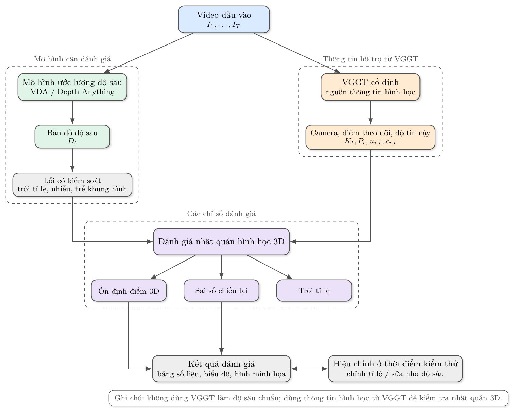
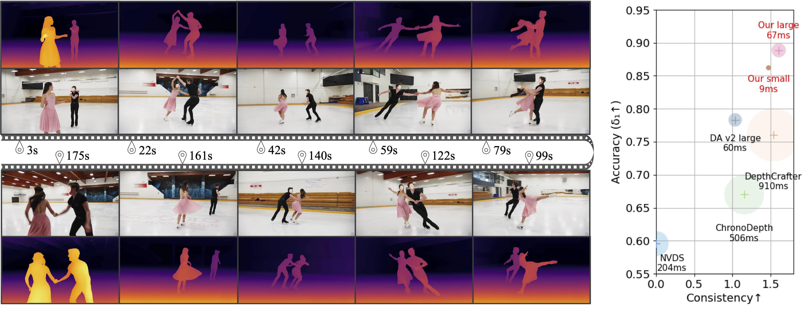

Đánh giá và hiệu chỉnh tính nhất quán hình học 3D
cho ước lượng độ sâu video bằng VGGT
VGGT-Guided Evaluation and Test-Time Adaptation for 3D-Consistent Video Depth Estimation
1Trường ĐH Công nghệ Thông tin
2University of Science HCMC, Vietnam
3National Institute of Informatics
What ?
Đề xuất một khung đánh giá sử dụng VGGT như nguồn thông tin hình học hỗ trợ (không phải chuẩn tuyệt đối) để:
- Phân tích cấu trúc 3D trên các quỹ đạo điểm dài hạn.
- Đề xuất và kiểm chứng 3 nhóm chỉ số: độ ổn định vị trí 3D, sai số chiếu lại dài hạn, độ trôi của tỉ lệ & độ lệch.
- Thử nghiệm hiệu chỉnh Test-Time Adaptation tối ưu tham số affine theo VGGT để giảm sai lệch.
Why ?
- Các mô hình độ sâu video hiện đại (như Video Depth Anything) ổn định về mặt hình ảnh nhưng chưa nhất quán về mặt hình học (trôi tỉ lệ, biến dạng không gian 3D).
- Các chỉ số hiện có (AbsRel, RMSE, TAE) chủ yếu đo sai số trên từng khung hình hoặc cặp khung hình liền kề, chưa phản ánh mức độ sai lệch tích lũy dài hạn.
- Cần một công cụ để phát hiện, giải thích và giảm sai lệch hình học khó nhận biết bằng mắt thường.

1. Giới thiệu & Mục tiêu
Mục tiêu là xây dựng quy trình sử dụng VGGT để đánh giá và hiệu chỉnh tính nhất quán hình học 3D của bản đồ độ sâu video.
- Bài toán: Ước lượng độ sâu nhất quán.
- Ý tưởng: Dùng thông tin camera, điểm 3D và điểm theo dõi từ VGGT như tín hiệu hỗ trợ.

Figure 1. Ước lượng độ sâu ổn định theo thời gian (nguồn: Video Depth Anything).
2. Phương pháp & Chỉ số
Quy trình:
- Căn chỉnh chung: Ước lượng một cặp tham số (scale & shift) cho toàn bộ đoạn video trong không gian nghịch đảo độ sâu.
- Chỉ số đề xuất:
- Độ ổn định vị trí 3D: Đo mức biến dạng của cùng một điểm qua nhiều khung hình.
- Sai số chiếu lại dài hạn: Phân tích độ lệch chiếu lại theo khoảng cách thời gian.
- Mức trôi: Theo dõi sự thay đổi của tỉ lệ và độ lệch.

Figure 2. Mô hình VGGT cung cấp tín hiệu hình học đồng thời.
3. Hiệu chỉnh & Kết quả
Test-Time Adaptation:
- Hiệu chỉnh tham số affine \(x'_t = a_t x_t + b_t\) dựa trên chỉ số VGGT, cố định trọng số mô hình.
- So sánh giao thức dùng VGGT và giao thức dùng dữ liệu chuẩn (TUM RGB-D, Sintel).
Kết quả mong đợi:
- Tỉ lệ xếp đúng thứ tự > 80% đối với các mức độ sai lệch kiểm soát.
- Giảm trung vị sai số hình học tham chiếu.